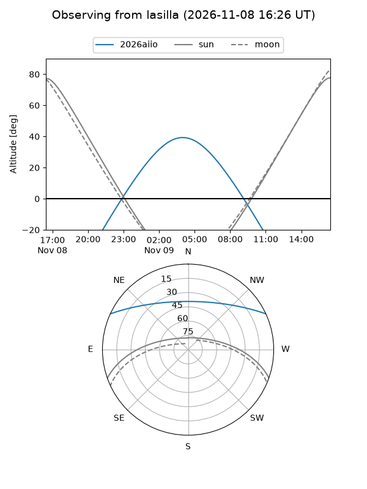
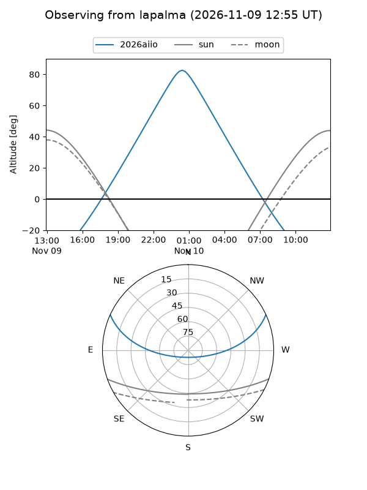
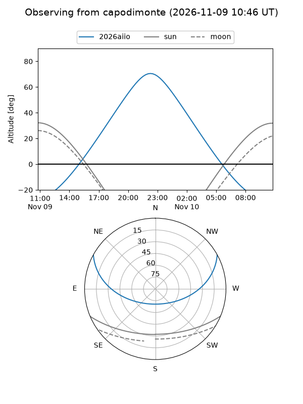
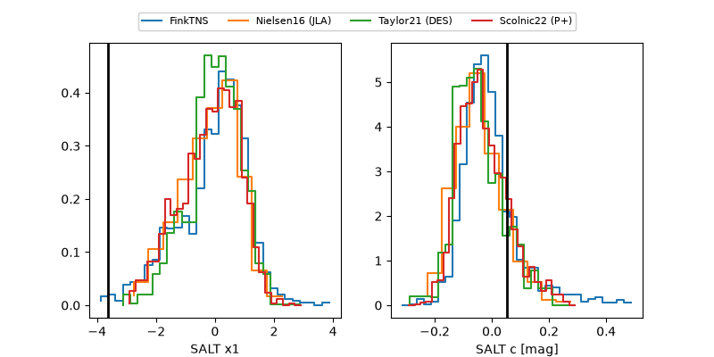

2026aiio
Target 2026aiio at 2026-11-09 09:40
Aliases and brokers:
FINK-ZTF: ztf.fink-portal.org/ZTF26acecylq
Lasair-ZTF: lasair-ztf.lsst.ac.uk/objects/ZTF26acecylq
ALeRCE-ZTF: alerce.online/object/ZTF26acecylq
YSE-PZ: ziggy.ucolick.org/yse/transient_detail/2026aiio
TNS name: wis-tns.org/object/2026aiio
Direct TNS query: direct search
alt names
ZTF26acecylq (ztf,fink_ztf)
2026aiio (tns,yse)
Coordinates:
equatorial (ra, dec) = 37.1443,+21.28459
equatorial (HMS+DMS) = 02:28:34.63,+21:17:04.53
galactic (l, b) = (151.2779,-36.18380)
Flags:
peak dt: +10.8
Photometry:
last ztfg=20.19, ztfr=20.01
3 ztfg, 5 ztfr detections
Lightcurve
Visibility



Additional plots
